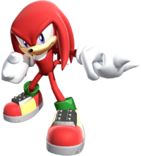

Con todas las impresionantes hazañas y proezas que Bruce Lee realizó dentro y fuera de la pantalla grande, no era de extrañar que poco después de su muerte aparecieran miles de loquitos y frikis fanáticos de su Jeet Kune Do que quisieran imitarlo para robarse el crédito que él tardó años en cosechar, y que los copiones pretendían obtener a costa suya en apenas pocos días (si hubiera habido youtube en esa época hasta habrían tardado menos).
De hecho ese fue uno de los planes maquiavélicos maravillosamente orquestados por Raymond Chow y la Gorden Harvest: ni bien murió Bruce ellos decidieron aprovechar el furor del Dragón para seguir facturando con películas de Kung-Fu clase-B, y así promovieron la proliferación de innumerables artistas marciales y chinos copiones que imitaban las peripecias y el estilo de Bruce Lee, y se lookeaban como él para seguir ganando fama y fortuna con su imagen, y así fue como la Golden Harvest desarrolló millares de películas de Hong-Kong protagonizadas por Bruce Li, Bruce Lei, Dragon Lee, Bruce Le, Bruce Chen, Bruce Lai, Bruce Lau, Bruce Lei (si, igual que el otro), Bruce Leung Siu-Lung, Bruce Liang, Bruce Lo, Bruce Ly, Bruce Thai, Dragon Sek, Dragon Shek, Judy Lee, Jun Chong, Bruce K.L.Lea, Bruce Lea, Kim Tai-Jung, también conocido como Tong Lung, Tang Lung, Kim Tai-Chung, Li Hsiu-Hsien, Danny Lee, Sammo Hung, Tang Lung, Jackie Chan, Jet Li, Chow Yun-Fat, Stephen Chow, y un larguísimo etc...
Además lo mas importante fue que algunos pocos de esos pillastres acabaron haciendose famosos de adeveras, y el colmo es que la BruceLeemanía se acrecentó tanto al punto tal de que las empresas de videojuegos también decidieron que no bastaba con hacer juegos de Bruce Lee, sino que además había que explotar en demasía su imagen y crear nuevos personajes de videojuegos basados en él y/o en su defecto en su estilo de lucha y algunos otros de sus "atributos".
Estos son algunos de los mas grandes imitadores de Bruce Lee, que se volvieron famosos copiando basándose en su estilo:
|
|
Descripción
|
Jackie Chan |
«"Lo que yo hago es totalmente lo contrario a lo que hacía Bruce; yo hago comedia y él hacía drama, yo hago personajes que facilmente son golpeados y él hacía personajes imbatibles..., etc., etc,"»
~ Jackie Chan negando ser un copiota clon
El primer horrible clon que se autodenomina un comico superior al gran dragon ¡¡Pamplinas!!, eso lo hace para que no le fichen y digan "éste tío Jackie está imitando a Bruce Lee", pero vamos Jackie... sabemos que eres el mas grande imitador de Bruce Lee y ni bien el cayó en el sepulcro tu viste tu oportunidad de saltar al estrellato ocupando el hueco que él había dejado. Bien que hasta te pusiste un nombre de pila gringo igual que como hacía él, y aprovechaste su éxito para triunfar en el glorioso mundo de las bofetadas. Por eso sabemos que eres un plagio de Bruce Lee, y nomás cambiaste algunas cosas en tus películas pa' que luego no anden diciendo que le robaste el estilo a Bruce, aunque todos sabemos que es así.
|

Jet Li |
«Soy como el beso del dragon, letal y seductor.»
~ Jet Li copypasteando al gran Bruce Lee
El "otro" "sucesor" de Bruce Lee, y digo "sucesor" por no decir "imitador", que sería lo más correcto. Jet Li vio a Jackie Chan saliendo de las sombras de Bruce Lee para ocupar su lugar protagónico y entonces se dijo: "ah, si este bocazas puede entonces yo también puedo", y así fue que Jet Li también se puso un nickname gringo para seguir copiando el estilo de Bruce, y también luego de unos cuantos papeles de chino con coleta se le subieron los humos y quiso hacer algo "mas sofisticado" al estilo de Jólibud, y se fue a trabajar como mafioso para darle ostias a Danny Glover y a Mel Gibson; pasando luego a robar diamantes junto a DMX, y retornando a su China natal para hacer de Héroe, donde intenta matar al Emperador Chin Shi Huang Di, aunque luego él mismo se convierte en el Emperador Chin Shi Huang Di, pero resulta que muere a manos de Brendan Fraser, para luego hacer más películas con su colega imitador Jackie Chan.
|
Stephen Chow |
«Yo selé el nuevo astlo intelnacional del Kung-Fu, cuando Jackie Chan se letile para disflutal de sus millones de dólales. Yo no imito al glan Bruce Lee, sino a Jakito-Chan.»
~ Stephen Chow sobre si mismo
El aparente sucesor de Jackie Chan, y siendo que Jackie Chan es el "sucesor" de Bruce Lee, entonces Stephen Chow viene a ser una especie de "sucesor indirecto" de Bruce Lee, o como decía mi abuela la italiana: Plaggio di Plaggio. También a la legua se nota que Stephen Chow ha imitado a Bruce Lee: usa nickname yankee igual que él, tiene un físico formado muy parecido al de él (probablemente entrenaba frente a un póster de Bruce Lee para parecérsele), interpreta personajes heroicos de clase obrera igual que Bruce Lee, y siempre termina quitándose la camisa para alardear de sus tonificados músculos abdominales y demas fibras bien marcadas en el resto de su torso, justo como Bruce hacía. Quizá la única diferencia es que sus películas también son cómicas, copiando así el truco de Jackie Chan para despistar a los nerds y que éstos no lo señalen como un puro plagio, aunque sí como un "plaggio di plaggio". Sus mas grandes éxitos fueron Shaolin Soccer & Kung Fu Hustle, y su mas grande fracaso fue haber producido la película de Dragon Ball, Dragonball Evolution.
|
Yunfat Chow |
«Be Like Water...»
~ Yunfat Chow cuando esta a punto de eyacular.
También conocido como Chow Yun-Fat, que de hecho ese es su nombre real porque los chinos escriben el nombre al revés, anteponiendo primero el apellido y luego el nombre de pila, y eso se debe a que como son Zhang Ziyi y a Michelle Yeoh. Ademas hizo otras películas como Curse of the Golden Flower, donde expone las miserias de la monarquía confucianista (y se tira a Gong Li) y Bulletproof Monk, donde le enseña a dar ostias a Sean William Scott, pero sin duda su mayor fracaso fue hacer la pésima caracterización del Maestro Roshi en Dragon Ball: Evolution, que casualmente fue producida por Stephen Chow (sí, sí, el fulano del que hablé mas arriba), así que es probable que ese miembro de la familia Chow le haya querido cagar la carrera a su primo Yun-Fat para que no se quede con el puesto de sucesor de Bruce Lee... en fin, algo típico de los clanes chinos donde siempre se cagan entre los mismos familiares y demás miembros de la parentela. En enero de 2005 perdió su título como clon de Bruce, ya que engordó 50 kilos debido a que le callo un camión de chocolate. Actualmente sustenta el papel de Confucio, cagándose así en el Taoísmo de Bruce Lee.
|
|
|
Descripción
|
Fei Long |
«Digan lo que quielan, el logo de mi escuela de Kung-Fu es justo el mismo logo que el del Jun-Fan Gung-Fu Institute... ¡Digo no! ¡No lo es!»
~ Fei Long sobre su Hiten Ryu.
Probablemente el más grande plagio de Bruce Lee en el mundo de los videojuegos. Aparece en la saga de Capcom dijeron que aunque todo el diseño del personaje de Fei-Long se base en Bruce Lee, al menos su estilo de combate no, porque el tal Fei-Long inventó un estilo propio al que llamó Hitenryu... Muy lindo, pero...¿en que se basa el "HitenRyu"?, pos obviamente se basa en copiar EXACTAMENTE los mismos movimientos que usaba Bruce Lee en su Jeet Kune Do, y así vemos como Fei-Long da una doble patada en salto y golpes rapidos con los puños y hasta poses de lucha idénticas a las de Bruce, e incluso da esos gritos y chillidos con voz aguda tipo ¡¡¡OoouuuuuuuuaaaaA!!! y ¡¡¡Waaachaaaaaa!!!, que son una superobvia imitación de los que hacía Bruce Lee, incluso en el juego Super Street Fighter II Fei-Long dice: “Nunca seré como la gran leyenda y su hijo“, en referencia a Bruce y Brandon, que murió poco antes del lanzamiento del juego, y otra referencia se da en el Street Fighter Alpha 3 donde Fei-Long dice a sus alumnos: “Den patadas fluidas como el agua“, en tributo al célebre Be Water My Friend del queridísimo Bruce Lee. Los fans aseguran que al menos la patada flamígera de Fei-Long sí es original de CapCom pero... en realidad se basa en una ocasión en que Bruce accidentalmente noqueó a un camarógrafo en el plató de The Green Hornet y al tío como que se le salió la mandíbula por el patadón del Dragón y en esas dijo que la patá de Bruce "ardía tanto como el fuego" , así que por mucho que CapCom y los fans de Street Fighter digan que "al menos el Kung-Fu de Fei-Long no es una copia del de Bruce", pos vamos chicos...es obvio que sí lo es y nomas por cambiarle el nombre no significa que lo van a poder ocultar; el tal Hiten Ryu es claramente el Jeet Kune Do de Bruce Lee, y nomas le cambiaron el nombre para aparentar que no lo plagiaron, cuando en realidad es justamente eso lo que hicieron.
|
Liu-Kang |
«Soy uno de los mas famosos plagios de Herman Li Bruce Lee.»
~ Liu Kang sobre sí mismo
Es el prota de la saga de Liu-Kang es un monje shaolin, cuando es obvio que no lo es porque en la puta vida los monjes shaolin se dejaron el pelo largo con semejante melena como tiene Liu-Kang, así que es obvio que eso lo dicen para despistar y que creamos que Liu Kang es un monje budista cuando en realidad esos se afeitan la cabeza todos los días pa' tener la calva tan pelona como las bolas de un metrosexual, en cambio los únicos monjes a los que se les permite llevar el pelo largo como se les de la gana son los monjes taoístas, y precisamente Bruce Lee era taoísta así que es obvio que Liu-Kang es un plagio de Bruce y los tíos de MK nomas dicen que es shaolin para que no los acusemos de imitadores, cuando eso es justo lo que son. Ademas Liu Kang tiene un pantalon que no es 100% negro sino que tiene una franja roja en el costado; los pants de Bruce no eran así salvo claro el del uniforme de Game Of Death donde la ropa era amarilla y la franja negra, y aquí los chicos de MK le hicieron a Kang el pantalon de babucha negro con la franja roja pa' que no digan que se lo copiaron a Bruce, aunque es obvio que la idea de ponerle una franja la sacaron de esa película. También Liu-Kang como tiene pelo largo usa una cinta roja en la frente para que no se le venga la melena a la cara, y esa cinta es roja, justo como el color que usan los taoístas además del ya conocido blanco-negro del ying-yang, ¡y el colmo es que esa cinta tiene en el medio precisamente ese simbolo taoísta del ying-yang!, pero como...¿que no era que Liu-Kang era un shaolin?, ¿entonces porque no tiene un simbolo budista como la flor de loto o un Buda meditando?, pos no, le pusieron un simbolo taoísta porque está inspirado en Bruce, y además este chinito también tiene voz aguda y da grititos así del tipo Ooooouuuuuuuu...!!! y Uuuuaaaaaaaaaaa...!, tal como los que daba Bruce Lee.
|
Marshall Law |
«Me deje el bigote pa' que no me digan que imito a Bruce Lee, pero resulta que en una época Bruce Lee usaba exactamente ese mismo bigote.»
~ Marshall Law sobre su menor plagio
Un maestro de Jeet Kune Do que sale en la saga de Namco dijeron confeso haber copiado el estereotipo del chinito BruceLeeano para crear al personaje de Marshall Law. Además el nombre del tío éste es claramente homófono (no confundir con homofóbico) al de Martial Law, que no es la "Ley Marcial" que los fachos gustan de aplicar pa' joder a la gente, sino que es la serie de televisión de los años '90 donde Sammo Hung protagonizaba a un poli chino que daba ostias haciendo peripecias marciales, y resulta que casualmente este tío Sammo Hung había sido uno de los mas famosos "clones" de Bruce en su Hong-Kong natal, hasta que comiendo hamburguesas se cortó el labio y engordó 680 libras y por eso la Golden Harvest ya no lo dejó hacer de clon de Bruce Lee por haber perdido el parecido físico, y así Sammo se fue a Gringolandia donde la CBS lo contrató para su serie de acción Martial Law; lo que demuestra que los tíos de Namco tomaron el nombre de Marshall Law de éste plagio fracasado de Bruce Lee, por lo que Marshall Law es otro Plaggiarismo Di Plaggiarismo. Como dato extra cabe destacar que los de Namco le inventaron un hijo a Marshall Law, siendo ése Forest Law, por lo que obviamente si Marshall es una imitación de Bruce Lee, entonces Forest es una imitación de Brandon Lee, el hijo de Bruce.
|
Kim Dragon |
«No, no soy Syaoran Li, soy Kim Dragon, una versión chafa copiada por los surcoreanos basada en Fei-Long Bruce Lee.»
~ Kim Dragon sobre sí mismo
Aparece en el juego SNK para robarle éxito a Street Fighter, al que obviamente no pudo superar porque no le llega ni a los talones. Kim Dragon es otro descamisado con pantalones oscuros y que es experto en Jeet Kune Do y se corta el cabello con un tazón para tenerlo igual que Bruce Lee, y al igual que él, quiere hacerse famoso actuando en películas de bofetadas y patadones. Hastá ahí es mas o menos la misma mierda, pero la polémica aquí radica en que el tal Kim Dragon no es chino sino coreano, y por eso los conservadores de Corea del Sur se cabrearon bastante porque para ellos es una ofensa que un personaje coreano no haya elegido el Tae Kwon Do como todos los babosos surcoreanos, y en cambio haya preferido el Kung-Fu chino. Por eso el gobierno capitalista de Surcorea cree que en realidad Kim Dragon es un espía enviado por el gobierno comunista Chino, aunque lo mas probable sea que Kim Dragon en realidad sí sea coreano, pero del norte, y por eso los Norcoreanos lo enviaron como espía al sur y es obvio que en Corea del Norte no son estúpidos y por eso no lo entrenaron en el Tae Kwon Do porque bien saben que esa arte marcial no sirve ni como deporte olímpico (si es que se la puede considerar "arte marcial") y por eso Kim Jong-Il entrenó a su hijo no reconocido Kim Dragon en el noble arte del Jeet Kune Do, porque es obvio que las técnicas del Kung-Fu de un chino comunista como Bruce Lee son infinitamente superior a la chafez del TaeKwonDo capitalista de Surcorea Que aquí entre nos, el tío que inventó el TKD se fue a vivir a Norcorea porque era íntimo amigo de Kim Il-Sung y simpatizaba con sus ideales socialistas contrarios a los del neoliberalismo de Surcorea.
|
Jann Lee |
«No voy a escondelme, lo leconozco, imité a la pelfección una de las más glandes calactelísticas de Bruce: sel todo un "Dragón" con las mujeres.»
~ Jann Lee sobre su plagio
Es otro experto en Jeet Kune Do, que aparece en la saga de Jann Lee, que es también un chino descamisado que nomas usa pantalones, solo que de color blanco pa' que luego no digan que le han robado todo a Bruce Lee. Además Jann Lee usa un peinado distinto al de Bruce, y en vez de peinarse como Moe de Los Tres Chiflados prefirió una onda mas "cool" y peinarse como Akira Yuki de Virtua Fighter, ya que a fin de cuentas Dead or Alive es también un plagio de aquella exitosa saga de lucha de SEGA. Aún así Jann Lee imita a Bruce Lee hasta en el nombre, y no solo por tener el mismo apellido sino que ademas "Jann Lee" hace referencia al nombre real de Bruce, que era "Lee Jun-Fan", robando algunas letras de su nombre verdadero como pa' no perder la costumbre de copiar al Dragón. A pesar de todo Jann Lee no fue exitoso en hacer películas de esas, pero si tuvo mucho éxito en andar follando putas de casi todos los Dead Or Alive, principalmente siendo Lei Fang la chinita que resultó mas veces penetrada por él que cualquier otra de las guarras esas.
|
Dragon Chan |
«Wuuuaaa-chaaaa»
~ Dragon Chan sobre su vida, hechos y obras basadas en Bruce Lee
Un fulano que sale en el juego boxeo y no de artes marciales, pero como es un juego friki y satírico donde vale todo porque al referee lo secuestró un mono con una motosierra y por eso no hay árbitro que ponga reglas, entonces los luchadores hacen lo que les venga en gana y este Dragon Chan no es la excepción. Es también un HongKongnés sin camisa y de pantalon oscuro, que aprovecha sus conocimientos de Jeet Kune Do para tomar ventaja de sus oponentes que nomas conocen la simplista vulgaridad y la falta de técnica del boxeo inglés. En esas Dragon Chan aprovecha para darle tremenda patada en salto a los pinches contra los que se bate en el ring, y así los deja K.O. rajándole la cara de un patadón que les parte la mandíbula, tal como hacía Bruce Lee.
|
 Knuckles The Echidna |
«Knuckles The Echidna estudió Jeet Kune Do con Bruce Lee y aprendió de él su famoso y poderoso Golpe de Una Pulgada.»
~ Son Goku sobre Knuckles
Es uno de los personajes creados por Jeet Kune Do, y con todas esas caracerísticas subliminales los desarrolladores de SEGA fueron haciendo de Knuckles una especie de "plagio encubierto" de Bruce Lee como para que en la apariencia no se note la imitación, pero en la escencia si se capte que el equidna rojo es un tributo copiado en honor al Maestro Dragón.
|
Hitmonlee |
«Hitmonlee estudió el Jeet Kune Do de Bruce Lee para estirar las piernas cuando sale de la Pokéball porque ahí dentro está muy apretado y se le acalambra hasta el agujero del culo.»
~ Pokédex describiendo a Hitmonlee
El bichejo número #106 de la Hitmonlee es dar patadas, que claro que Bruce no solo daba patadas y también te surtía tremendo trompadón, pero al Hitmonlee le hacen dar patadas porque comparte escenario con su hermano Hitmonchan, cuya relevancia analizaremos a continuación: Si al nombre de "Hitmonlee" lo dividimos en sílabas nos queda "Hit-Mon-Lee", que ya así separado por guiones nos suena a chino, pero esa no es toda la referencia a Bruce, ya que si analizamos el significado de cada sílaba vemos que Hit=Golpe; Mon=Monstruo; Lee=Bruce, por lo que tenemos que su nombre significa "Monstruo que da Golpes como Bruce Lee", o "Monstruo que Golpea como Lee", o "Golpe Monstruoso de Lee", o demas variantes como "Monstruo que te la raja como Bruce Lee", y así tenemos que aunque a simple vista Hitmonlee no es parecido ni por asomo a Bruce Lee, luego notamos que si se parecen en características como su nombre y su contextura física de enano matón, y también en la habilidad de dar distintas variantes de patadas y puntapiés laxantes. Por el contrario, su homólogo (no confunfir con homo-novio) "Hitmonchan" significaría "Golpe Monstruoso de Chan", haciendo referencia a Jackie Chan, y por eso Hitmonchan solo da puñetes y Hitmonlee solo da patadas, porque Jackie Chan dice hacer exactamente lo opuesto a lo que hacía Bruce Lee, cuando en realidad sabemos que finge hacer lo contrario para ocultar que en el fondo también es un gran imitador de Bruce.
|
Jacky Bryant |
«Siempre fui fan de Bruce, pero cuando usaba el traje rojo decían que era un plagio de Ken Masters y por eso en apariciones futuras empecé a vestirme como se me pega la regalada gana.»
~ Jacky Bryant sobre sus plagios
El segundón que acompaña a Akira Yuki en la saga de lucha Virtua Fighter de Ryu, y por eso su compinche Jacky Bryant fue hecho como un plagio de Ken. Pero... ¿adivinen que estilo de Kung-Fu usa Jacky Bryant?... Exacto!, Jeet Kune Do, claramente le robaron el método de pelea a Bruce Lee, y como para que no se note la falta de originalidad, al gringo éste le pusieron de nombre "Jacky" como para no usar el nombre de "Bruce", pero... ¿que "Jackie" ya no era el nombre de Jackie Chan?, precisamente, los chicos de SEGA no se pusieron a pensar demasiado para el nombre de éste tío, y como nomás era otro que le imitó el estilo a Bruce entonces le pusieron el nombre del mas famoso de sus imitadores. Además el tal Jacky Bryant tiene una hermanita, Sarah Bryant, un bombón superdulce de 18 años con un cuerpazo tremendo con las tremendas tetas bien firmes y la cola parada (y así de parada te queda la p***) y que por si fuera poco es rubia y de ojos celestes, y con semejante yegua de hermana guarra que tiene, Jacky siempre está de guardabosques y no deja que nadie le toque ni un pelo de concha a la hermanita porque él quiere ser el único que le quite la virginidad; y todo ese cuento está parcialmente basado en la Bio de Bruce, porque el chino no tenía una hermana así de guarra como esas, pero su esposa era justo una rubia tetona con tremendo cuerpazo a la que todos se querían coger y el chino obviamente le descalabraba los cachetes a todo aquel que se le acercara, así que la enfermiza relación incestuosa entre Jacky Bryant y su hermanita Sarah es una especie de caricaturismo desmesurado parcialmente inspirado en la relación que tenía Bruce Lee con su esposa Linda Emery Lee.
|
Johnny Cage |
«También pelo el torso desnudo y fibroso pero uso anteojos de sol para verme mas pintón y levantar tías detrás del plató de filmación.»
~ Johnny Cage fanfarroneando como siempre
Otro que hace las veces de Jacky Bryant pero en versión Johnny Cage también es un actor de películas de Kung-Fu y también usa el estilo Jeet Kune Do, y también anda por la vida sin camisa y nomas que en vez de usar babuchas negras usa pantalones cortos de boxeador, porque a fin y al cabo es yonki, pero luego de unos años como ya se había hecho evidente que era otro imitador de Bruce, entonces empezó a usar pantalones negros largos como los que usaba el Maestro Dragón. Por tantas "sospechosas coincidencias" se puede decir que es evidente que Johnny Cage se trata de otro plagio en pseudotributo a Bruce.
|
Abyo |
«El enano chino que pela el torso desnudo sin abdominales, pero hace proezas con el nunchaku y se peina igual que Bruce Lee.»
~ Pucca describiendo al amor de su vida
Es un enano mocoso que no se ve del suelo de lo tapón que es, pero que igual notamos que es un fiel imitador admirador de Bruce Lee. Es un crío de los tantos que salen en la patética serie infantil Abyo hace las veces de amigote de Garu, por lo que creemos que él será quien se tire a Pucca cuando ella se canse de andar persiguiendo inútilmente a Garu, que nunca saldrá con ella porque él le va mas a I Ching, un texto taoísta de esos que flipan que te cagas y de los que a Bruce le encantaba leer para "dejar volar su imaginación". En fin..., Abyo es un chino de esos con ropas clásicas vestido casi siempre de negro y con el corte de cabello que usaba Bruce al peinarse con una palangana en la cabeza, y lo mas explícitamente BruceLeeano es que Abyo siempre que pelea rompe su camisa para dejar su torso desnudo, aunque claro que no se le ven los abdominales marcados porque la calidad de la animación surcoreana es muy mala (que digo mala...¡es pésima!); pero conste que con el pantalon negro, el torso desnudo, y el cabello negro peinado a lo flequillo, pos sí notamos que Abyo es otro plagio tributo al Dragón de Hong-Kong, (y el colmo de los colmos es que el padre de Abyo es un poli-policía que...¿adivinen como se llama?: "¡Oficial Bruce!").
|

Rock Lee |
«Imita bien a Bruce en el peinado y las patadas pero ese traje verde de recolector de residuos no le queda nada bien.»
~ Hinata Hyuuga sobre Rock Lee
Uno de los tantísimos pendejos que salen en el afeminado afamado animé de Naruto. Es japo en vez de chino y no se saca la camisa ni nada, pero es mas que obvio que se trata de otro enorme y descomunal plagio de Bruce Lee ya que desde el inicio vemos su mismo apellido, cosa que no se explica como un ponja puede tener un apellido chino, y además Rock Lee también tiene el corte de cabello que se hizo poniendo su cubeta orinal en la cabeza (obviamente luego de haberla lavado y dejarla bien desinfectada), que él dice que es en honor a su Maestro Maito Gai, que lleva el mismo peinado, pero obviamente se trata de otro plagio de Bruce, y de hecho ambos son una imitación mediocre de él. Aunque quiera diferenciarse de Bruce haciendo que nunca se quita la camisa y que ademas practica Taijutsu en vez de Jeet Kune Do, igual no puede ocultar que es un copión de Bruce Lee ya que como todos sabemos "los chicos y los borrachos no mienten", y en efecto cuando este chico Rock Lee se pasa de copas por correrse tantas juergas con sake (casualmente como Bruce hacía) entonces ahí nos muestra que también sabe pelear con el estilo de Kung-Fu del Drun Ken Quan o mas conocido como Boxeo Borracho, que es nada menos que el estilo del Puño del Ebrio que practicaba Bruce Lee cuando también se corría tremendas juergas con exceso de sake que le elevaba los niveles de alcohol en sangre hasta las nubes, pero le daban la capacidad de utilizar ese particular estilo de Kung-Fu Taoísta.
|

Gai Sensei |
«Se peinó como Bruce Lee y practicó con el nunchaku, pero también usa traje de recolector de basura y para colmo lleva chaleco de Boy Scout, así que en la ropa la cagó bastante.»
~ Sakura Haruno sobre Maito Gai
Como indica su nombre, es un Maestro Gay, lo que confirma que si existen artistas marciales homosexuales a pesar de que Japón y China lo niegan porque el capitalismo conservador japonés y el comunismo conservador chino son demasiado reaccionarios y homofóbicos como para reconocer públicamente la existencia de artemarcialistas maricones. Pos este Gai Sensei es nada menos que el maestro que le enseñó a pelear al pendejo ése de Rock Lee del que se habló anteriormente. Éste tío resulta que también quería ser un astro de Hong-Kong pero cuando en China descubrieron que era un Ninja Gayden lo mandaron a la mierda de regreso pa' Japón donde tuvo que trabajar en películas y animés Shonen-Ai hasta que sus habilidades de Ninja Gaiden le valieron el papel de un Mighty Guy en el animé de Naruto Uzumaki y los demas pendejos ninja que se pasan el día en la aldea fumando hojas. Allí el "Tipo Poderoso" se presentó como "Mighty Guy" pero pronto todos descubrieron que en realidad el era un Maestro Gay, y develada ya su identidad de Maito Gai entonces dejó de hacer fanfárrea y nomas se puso a enseñar su polla habilidad de Ninja Gaiden a los pendejos yonkis de la aldea fumeta, y para hacerse mas prestigioso decidió cortarse el pelo como Moe de Los Tres Chiflados para tener un peinado a lo Bruce Lee, a pesar de que Bruce no era ni ninja, ni gay, ni japo, ni nada de eso.
|
Beatrix Kiddo |
«La Rubia con Katana se convirtió en un clásico del cine de principios del Siglo XXI gracias a que se puso el chándal amarillo de Bruce Lee.»
~ Quentin Tarantino revelando el secreto del éxito de Kill Bill
Una de las pocas Uma Thurman en la célebre bilogía de Beatrix Kiddo pasó a ser una cuasi-imitación de Bruce basada parcialmente en él, aunque nomás que ella era una gringa rubia y alta que te cagaba a David Carradine murió en circunstancias dudosas al cabo de algunos años después de que Uma Thurman le toqueteara las bolas el corazón en esos cinco puntos específicos que había aprendido con la técnica del chino cabras Pai-Mei, así que joder que el Kung-Fu chino inspirado por Bruce Lee si es 1000 veces mas mortal que la Katana mas afilada!!!
|
Mr. Jones |
«Tengo dinero y mujeres, tu al final te mueres»
~ Jones Damon rapeando contra Bruce Lee (LOL?)
Jones Damon es uno de los segundones que aparece en Rage of the Dragons, otra de las sagas de lucha que SNK esbozó para intentar desbancar sin éxito al consolidado Street Fighter de CAPCOM. Aquí el tal Mr. Jones viene a ser "la versión afro de Bruce Lee", siendo que es un negro norteamericano que dice ser discípulo de Bruce Lee, y tiene una porra con el típico peinado afro y además es alto y mide como dos metros, por lo que se trata obviamente de una parodia de Kareem Abdul Jabbar, el famoso morenazo basketbolista que fue el discípulo que Bruce escogió para batirse a duelo con él en su última película Game Of Death; y en efecto Mr. Jones se viste con el mismo traje amarillo con raya negra que Bruce usa en esa escena de combate contra Kareem Abdul Jabbar, y ya que la cosa viene de parodiar a Bruce y a Kareem, Mr. Jones no solo dice que estudió con Lee sino que además él también creó su propio estilo personal, pero lo llamó Kung-Fu-nky; una clara cutreparodia de eso de hacer estilo propio como hacía el Dragón, pero como éste tío Jones es negro entonces creó un Kung Fu Funky obviamente basado en el género musical que estaba en auge entre los morenazos yankis de la década de los '70, imitando así a Bruce Lee que había basado algunos de sus movimientos en otro genero musical: el Cha-Cha-Cha que había enseñado en la década anterior a muchos chinitos a los que venció en innumerables torneos de baile.
|
Chie Satonaka |
«La tía de la izquierda es la fulana que se peina como Bruce Lee, y el bicho ese de la derecha es el adefesio en el que se transforma cuando se pone el chándal amarillo de Game Of Death»
~ Gordo Granudo sobre Satonaka
Otra de las pocas tías que imitan a Bruce. Es una putilla que aparece en Shin Megami Tensei: Persona 4, donde podemos ver que ella lleva el pelo corto peinado muy sospechosamente similar a lo Bruce Lee, además de que de hecho ella confiesa ser fan de las películas de Kung-Fu, por lo que probablemente pase horas enteras masturbándose con fotogramas y pictures de Bruce Lee donde se le notan bien los músculos fibrosos marcados y aceitados, por lo que no sorprende que Chie Satonaka destine 8 Hs. diarias a meterse el dedo en el naginata mientras que el arma mas usada por Bruce Lee era el nunchaku.
|
Lee |
«En la versión arcade andaba sin camisa y como la crítica lo tildó de imitador de Bruce entonces en las versiones domésticas del juego le pusieron la camiseta blanca.»
~ Superpro hardcore sobre el chino éste
El prota de la versión doméstica del juego de lucha Yie Ar Kung-Fu de Oolong, que no era el chancho de B. B. King, sino que es por tributo a Bruce Lee, porque la pronuncación china de su nombre se dice "Blus". Ya despues en la versión hogareña de Nientiendo (que no le llega ni por asomo al original de Arcade) los de Konami decidieron sacar al tal Oolong por problemas legales que tuvieron con Akira Toriyama, y así pusieron de protagonista a un chino flipao al que llamaron Lee, que obviamente usa pantalon largo pero anda con el torso desnudo y da patadas voladoras como el Maestro Dragón, pero finalmente la saga dejó de producirse ya que luego de semejante plagio tuvieron problemas legales con la viuda de Bruce Lee, Linda Emery Lee, que le comió mas del 80% de las acciones a Konami en el juicio por violación de copyleft y por eso Konami pasó a ser una empresa mediocre junto con Takara, Kaneko, Namco, Vic Tokai, SNK, y tantas otras que en los '90 quisieron igualar a SEGA & Nintendo pero que obviamente no le llegaron ni a los talones a ninguna de las dos.
|
Spike Spiegel |
«Bruce era un anarco-sindicalista-comunistoide... Yo solo soy un cawboy sindicalista marciano.»
~ Spike intentando librarse del tachón de copiuota
Así es, el prota de Spike Spiegel es experto en Jeet Kune Do, pero eso no es todo: a pesar de que no se parece un Spike Lee, mientras que el apellido "Spiegel" es una fusión de los apellidos Spielberg y Seagal, dos de los "Stevens" mas famosos, que coincidentemente también fueron amigos y estudiantes de Bruce Lee.
|
Maxi |
«Maxi viene a ser una especie de Jack Sparrow pero con nunchaku y técnicas de Bruce Lee.»
~ Guybrush Threepwood sobre Maxi
Uno de los tantos Namco y absorbida por Maxi viene a ser la versión nippona de Okinawa tiene un nombre gringo como "Maxi" que no se explica de donde salió, y de hecho si te fijas su nombre es mas sudaca que gringo. Mas allá de eso, Maxi es un experto en Jeet Kune Do a pesar de haber nacido mucho antes de que Bruce Lee inventara ese arte marcial, siendo esa otra de las tantas en las que Namco & Sega se unieron para crear un juego "sumamente realista y fiel, basado en hechos de la vida real". El colmo es que Maxi también tiene por arma un nunchaku tal como el que usaba el Maestro Dragón, y ya dicho sea de paso su Okinawa natal por esos tiempos se llamaba RyuKyu, que era un reino independiente y el significado del nombre se traducía como "Bola de Dragón", siendo una clara referencia a los testículos de Bruce Lee(¿pos si no a que pensaste que se refería?^^).
NOTA: Se tiró a Ivy y la jodió bien jodida dejandola tan follada como a todas las putas que se cogía Bruce Lee, así que en eso también se parece a él.
|
Billy Lee & Jimmy Lee |
«Soy el fulano de azul con cabello oscuro!»
~ Billy diciendole a su madre que no lo confunda con su hermano gemelo
«Soy el rubio de rojo que parece un plagio de Ken Masters!»
~ Jimmy diciendole a su madre que no lo confunda con su hermano gemelo
Son los protas de la exitosa saga de videojuegos Double Dragon, que como indica su nombre, trata de dos tíos que se la dan de dragones, y por eso aprendieron el estilo Jeet Kune Do de Bruce Lee y hasta se tatuaron unos dragones en el pecho. Los dos son hermanos, pero a diferencia de Billy Lee y Jimmy Lee son hermanos gemelos que como puede verse llevan el mismo apellido que Bruce, por lo que deben ser otros de tantos de sus hijos bastardos aunque ellos dicen que son hijos de puta de un tal John Lee. Los dos son exactamente lo opuesto el uno al otro, siendo que Billy lleva el cabello negro y el traje azul, mientras que Jimmy es rubio y su traje es rojo, resultando en otro plagio de Ryu & Ken de Street Fighter aunque en realidad eso de que son opuestos pero unidos es una referencia al concepto taoísta del Yin-Yang, que claramente está relacionado con Bruce Lee porque él se la pasaba todo el tiempo hablando de esas pendejadas filosóficas. Billy y Jimmy Lee se hicieron famosos dando ostias en los arcades copiando el estilo de Kung Fu de Bruce Lee, pero nunca llegaron a ser tan famosos como él y por eso la saga cayó en desgracia ya que cuando intentaron revivir el interés por Double Dragon haciendo una película, no tuvieron peor idea que contratar como coreógrafo de las escenas de lucha a Jean-Claude Van Damme que lejos de hacer las proezas marciales de Bruce, lo que hizo fue hacer una película de mierda como las que él acostumbra, donde se nota que de cine chino de Hong-Kong no sabe un carajo y la trama quedó siendo muy al estilo gringo donde el franchute ése que se la daba de héroe creyó que por ser flexible bastaba para ser buen luchador, cuando obviamente no fue así y como Van Damme no tiene ni por asomo el talento que tenía Bruce Lee, entonces las escenas que diseñó fueron una cagada y la película de Double Dragon fue horrenda y la susodicha franquicia de videojuegos cayó en el olvido, por lo que en eso no pudieron compararse con Bruce Lee, quien fue tan genial que hasta el día de hoy seguimos recordandolo con honores y nos pajeamos cada vez que vemos su foto lo tenemos en la memoria como al mas grande luchador de artes marxiales de todos los tiempos...(snif, snif!...)...
|
 De: La Frikipedia, la enciclopedia extremadamente seria.
De: La Frikipedia, la enciclopedia extremadamente seria.